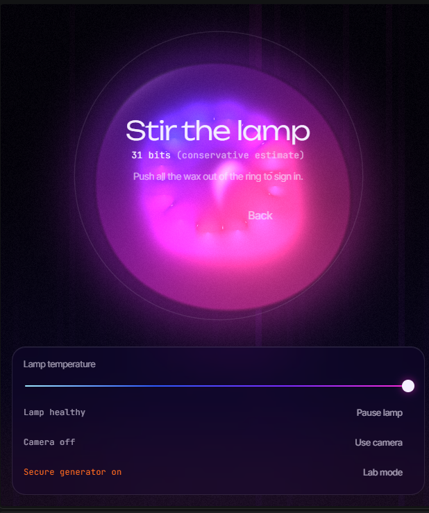
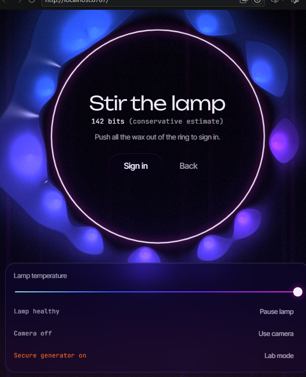
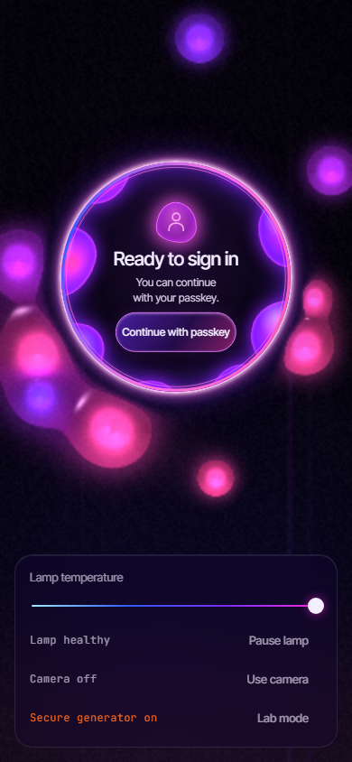
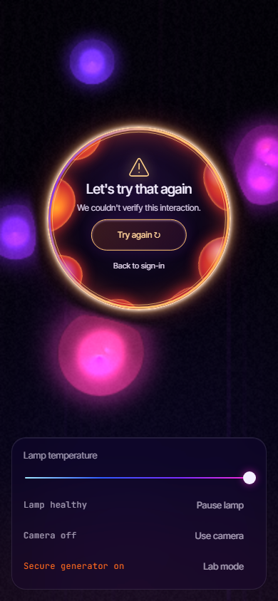
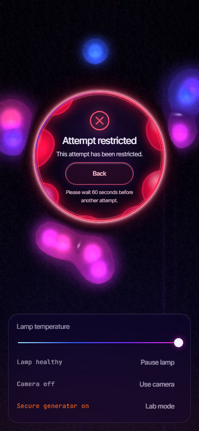
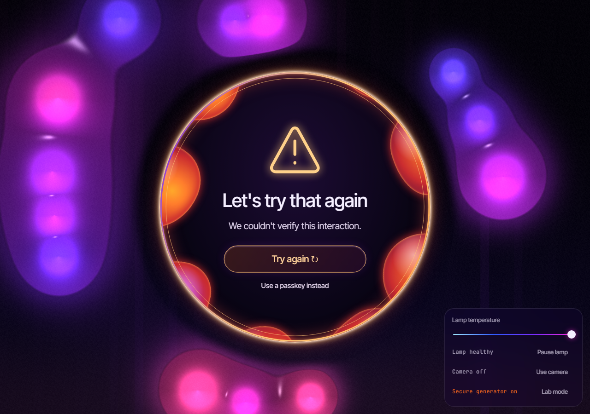

WebGL 2 · WebAuthn · Cloudflare Workers · Durable Objects
Stir the lava.
Sign in with a passkey.
LavaAuth is passwordless authentication with an interactive lava lamp for its interface. LavaGuard is the research layer that watches how the wax is stirred and tries to tell people from scripts. The wax is just the interface. A server-verified passkey is what actually signs you in.
One ring. Three outcomes. Then a passkey.
-
01
Clear the ring
Wax gathers inside a glowing circle. You push it out. A bounded observer turns the motion into a short feature summary: speed variation, curvature, pauses, corrections. It never uploads a raw trace.
-
02
LavaGuard decides
The Worker checks a server nonce, the context binding and replay history, then returns CLEAR, FLAG or BLOCK, all inside the same ring. CLEAR issues a scoped, single-use permission that lasts 90 seconds.
-
03
The passkey authenticates
Face ID, Touch ID, Windows Hello or a security key signs a 32-byte server challenge that expires after 60 seconds. Only a verified WebAuthn assertion creates a session. Stirring alone never does.





These screenshots are visual regression fixtures with mocked verdicts and real rendering. They show the interface, not a model judging a real person.
Passkeys are the security boundary.
Mouse movement, timestamps and client-computed features can all be forged. The design treats LavaGuard as advisory and puts identity on WebAuthn, which the server verifies on every sign-in.
The Worker verifies
- Credential signatures against stored public keys
- Challenges from a secure server generator: 32 bytes, 60-second expiry, one use only
- Exact origin and relying-party ID
- Required user verification
- Revocable sessions, with "sign out everywhere"
- Same-origin checks on every state-changing request
- Rate limits on issuance, evaluation and sign-in
- Atomic, single-use LavaGuard permissions with replay rejection
Deliberately not claimed
- The simulated lamp is not a random-number generator. Challenges come from the Worker.
- CLEAR means permitted to continue, not certified human.
- Browser automation hints are spoofable and stay advisory.
- A keyboard and no-WebGL passkey route is always offered before the challenge.
- A failed attempt never creates a session or ends an existing valid one.
Attacked on purpose.
LavaGuard was tested against Playwright, Puppeteer, Ghost Cursor, Bézier and lognormal cursors, replays, timing jitter, DOM-reading target pursuit and forged API summaries. All of it ran locally against real Workers.
- Adversarial cases initiated
- 44
- Declared automation families
- 18
- Bot attempts that got through
- 24
- Authenticated sessions obtained
- 0
That third number is the honest headline. Automation often does get past the stirring check, and a schema-valid forged summary can get CLEAR without touching the ring at all. None of it produced a session, because a passkey is still required. Those are Phase 6 local results, broken down in the adversarial report.

The ML pipeline, without the hype
An offline Python pipeline compares logistic regression, random forests and anomaly detection. It holds out whole generator families, keeps participants out of overlapping cohorts, and exports a compact model the Worker can run. On a public research corpus, the best candidate caught 211 of 777 generated bot rows. That is not a production detection rate.
The consent-first human study infrastructure is built: explicit consent before collection, withdrawal, and isolated final-evaluation data. It currently has zero participants. So human accuracy, false-positive rates and calibration are unknown, and ML enforcement is off in production.
Architecture
Measured, with the denominators.
- Distinct passing tests (local)
- 300
- Browser E2E suites
- 5
- Python ML integrity tests
- 57
- Known dependency vulnerabilities
- 0
The browser tests use Chromium's virtual WebAuthn authenticator. Real-device passkey trials with phones and hardware keys still have to be run by hand.
Local load: one desktop, synthetic callers
| Concurrency | Issue 200 / sent | Issue 503 | Evaluate 200 / sent | Accepted p95 (issue / eval) |
|---|---|---|---|---|
| 1 | 32 / 32 | 0 | 32 / 32 | 46 / 37 ms |
| 4 | 32 / 32 | 0 | 32 / 32 | 136 / 81 ms |
| 16 | 32 / 32 | 0 | 32 / 32 | 418 / 274 ms |
| 64 | 44 / 64 | 20 | 17 / 44 | 1093 / 381 ms |
| 128 | 35 / 128 | 93 | 25 / 35 | 1297 / 582 ms |
From local workerd and SQLite. A 503 counts as an availability failure, never as served traffic. Every level recovered after the pressure drained, and eight competing redemptions of one permission produced exactly one winner. None of this measures Cloudflare edge capacity.
Milestones
- Phases 1–5
LavaAuth
The design system, the metaball lamp engine, pointer stirring, the entropy display, mandatory user-verified passkeys, revocable sessions and Lab mode.
- LavaGuard 1–2
Behavioural layer
The observer, detector, reputation, policy and enforcer modules, all inside the existing ChallengeStore. Single-use scoped permissions and an accessible route.
- Phase 4
Hardening
Atomic rate counters, request caps and overload admission. Optional Turnstile step-up (off by default). Robust features and generator-family holdouts.
- Phase 5
Research infrastructure
Consent and provenance tracking, leakage-controlled splits, three classifier baselines with calibration, withdrawal, and a portable model that stays disabled.
- Phase 6
Adversarial study
44 browser and API attack cases, a private observation registry, a sharding prototype, and safer failed-sign-in recovery.
- Phase 7
Study readiness and scale
A preregistration draft, consent-gated review, withdrawal and cohort locks, signed shard routing, local load measurements, and a slow-client ingress diagnosis.
See it for yourself.
The working app runs on Cloudflare with your own passkey. LavaGuard ML enforcement is off in production.